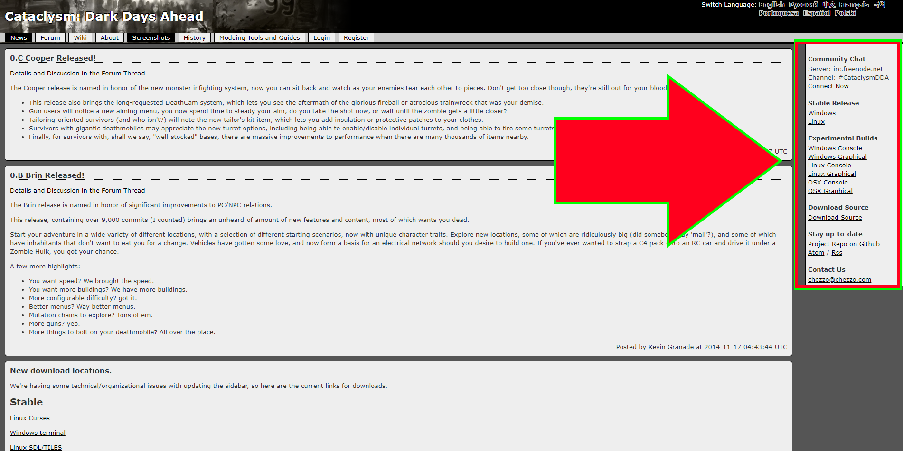

Cataclysm: DDA....
First off, what is it? Cataclysm: Dark Days Ahead is a turn-based, open-source roguelike game set in an apocalyptic world. You have to get your wits quickly, because, depending on the situation, or "Scenario" you pick to start off in, your life may very well be on the line. Food, thirst, bloodloss, infection...many things are a possible problem right off the bat.
What to worry about
Unless you just woke up in a warm and cozy cabin or stocked underground shelter, you need to quickly find a weapon, a good source for food(or at least a supply to last you a few days), somewhere nearby to collect water to boil and use, and shelter. Unless you are bleeding, or are coming down with an infection in a bite from one of the undead, those are your immediate goals. Later on, you can worry about learning new skills by reading, getting equipped with powerful gear, or building a mobile base out of an RV.
Where am I? What is this?
Cataclysm is free to play, and, as mentioned above, open-source. You can find the downloads for the game on multiple platforms here, and in either ASCII-based or graphics-based builds for each platform. Currently, the game includes many crazy things, including giant ants, advanced power armor, fungus creatures that can infect you, creatures from hell, and multiple branches of mutations to explore. Cataclysm is a huge game, with thousands, even tens of thousands of people enjoying it. Despite how it may look at first glance, the game includes hundreds of hours of entertainment, and plently of content to explore.
